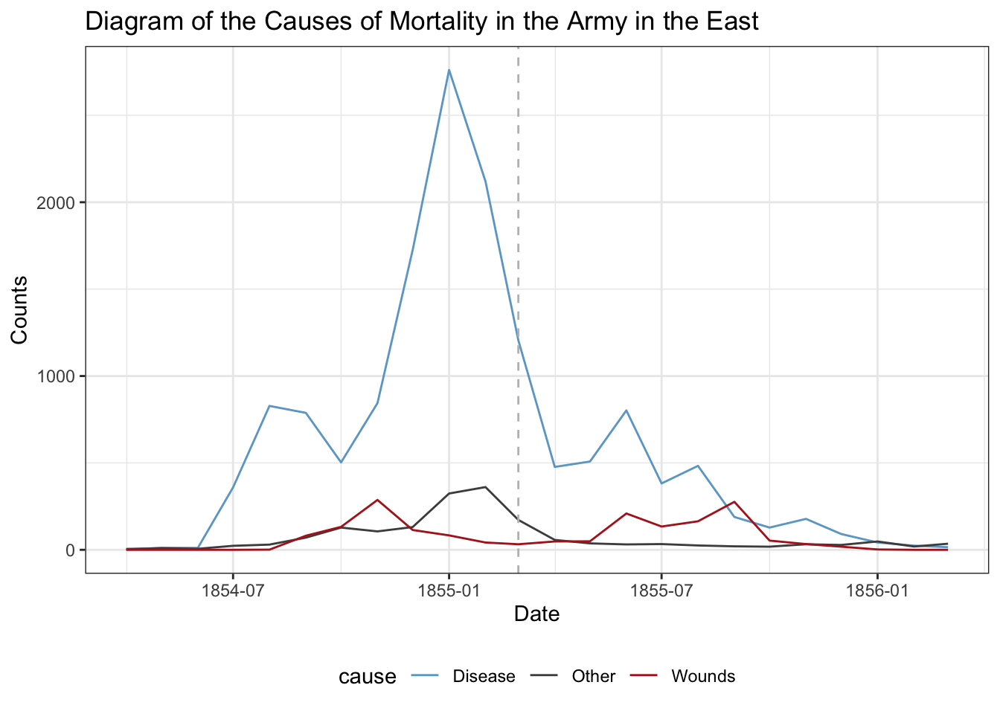

In this demo, we’ll first work with a dataset on the number of PhD degrees awarded in the US from TidyTuesday.
# Read in the tidytuesday datalibrary(tidyverse)phd_field <-read_csv("https://raw.githubusercontent.com/rfordatascience/tidytuesday/master/data/2019/2019-02-19/phd_by_field.csv")phd_field
# A tibble: 3,370 × 5
broad_field major_field field year n_phds
<chr> <chr> <chr> <dbl> <dbl>
1 Life sciences Agricultural sciences and natural resources Agric… 2008 111
2 Life sciences Agricultural sciences and natural resources Agric… 2008 28
3 Life sciences Agricultural sciences and natural resources Agric… 2008 3
4 Life sciences Agricultural sciences and natural resources Agron… 2008 68
5 Life sciences Agricultural sciences and natural resources Anima… 2008 41
6 Life sciences Agricultural sciences and natural resources Anima… 2008 18
7 Life sciences Agricultural sciences and natural resources Anima… 2008 77
8 Life sciences Agricultural sciences and natural resources Envir… 2008 182
9 Life sciences Agricultural sciences and natural resources Fishi… 2008 52
10 Life sciences Agricultural sciences and natural resources Food … 2008 96
# ℹ 3,360 more rows
Let’s start by grabbing the rows corresponding to Statistics PhDs. While there are a number of ways to do this, we can grab field containing “statistics” (including biostatistics) with the str_detect() function.
Biometrics and biostatistics
10
Educational statistics, research methods
10
Management information systems, business statistics
10
Mathematics and statistics, general
10
Mathematics and statistics, other
10
Statistics (mathematics)
10
Statistics (social sciences)
10
To start, let’s just summarize the number of PhDs by year:
Now, we’ll make the typical scatterplot display with n_phds on the y-axis and year on the x-axis:
stat_phd_year_summary |>ggplot(aes(x = year, y = n_phds)) +geom_point() +theme_bw() +labs(x ="Year", y ="Number of PhDs",title ="Number of Statistics-related PhDs awarded over time")
We should fix our x-axis here and make the breaks more informative. In this case, I’ll change it so each year is labeled (that may not be appropriate for every visual but it works out here).
stat_phd_year_summary |>ggplot(aes(x = year, y = n_phds)) +geom_point() +# Modify the x-axis to make the axis breaks at the unique years and show their# respective labelsscale_x_continuous(breaks =unique(stat_phd_year_summary$year),labels =unique(stat_phd_year_summary$year)) +theme_bw() +labs(x ="Year", y ="Number of PhDs",title ="Number of Statistics-related PhDs awarded over time")
To emphasize the ordering of the year along the x-axis, we’ll add a line connecting the points to emphasize the order:
stat_phd_year_summary |>ggplot(aes(x = year, y = n_phds)) +geom_point() +geom_line() +scale_x_continuous(breaks =unique(stat_phd_year_summary$year),labels =unique(stat_phd_year_summary$year)) +theme_bw() +labs(x ="Year", y ="Number of PhDs",title ="Number of Statistics-related PhDs awarded over time")
We can drop the points, leaving only the connecting lines to emphasize trends:
stat_phd_year_summary |>ggplot(aes(x = year, y = n_phds)) +geom_line() +scale_x_continuous(breaks =unique(stat_phd_year_summary$year),labels =unique(stat_phd_year_summary$year)) +theme_bw() +labs(x ="Year", y ="Number of PhDs",title ="Number of Statistics-related PhDs awarded over time")
Another common way to display trends is by filling in the area under the line. However, this is only appropriate when the y-axis starts at 0! It’s also redundant use of ink so just be careful when deciding whether or not to fill the area. We can fill the area under the line with the geom_area() aesthetic - but note that it changes the y-axis by default to start at 0:
stat_phd_year_summary |>ggplot(aes(x = year, y = n_phds)) +# Fill the area under the linegeom_area(fill ="darkblue", alpha =0.5) +geom_line() +scale_x_continuous(breaks =unique(stat_phd_year_summary$year),labels =unique(stat_phd_year_summary$year)) +theme_bw() +labs(x ="Year", y ="Number of PhDs",title ="Number of Statistics-related PhDs awarded over time")
We’ll now switch to displaying the different Statistics fields separately with the stats_phds dataset. First, we should NOT display multiple time series with just points as follows:
stats_phds |>ggplot(aes(x = year, y = n_phds, color = field)) +geom_point() +scale_x_continuous(breaks =unique(stat_phd_year_summary$year),labels =unique(stat_phd_year_summary$year)) +theme_bw() +theme(legend.position ="bottom",# Adjust the size of the legend's textlegend.text =element_text(size =5),legend.title =element_text(size =6)) +labs(x ="Year", y ="Number of PhDs",title ="Number of Statistics-related PhDs awarded over time",color ="Field")
It’s much simpler to just display the lines to compare the trends:
stats_phds |>ggplot(aes(x = year, y = n_phds, color = field)) +geom_line() +scale_x_continuous(breaks =unique(stat_phd_year_summary$year),labels =unique(stat_phd_year_summary$year)) +theme_bw() +theme(legend.position ="bottom",# Adjust the size of the legend's textlegend.text =element_text(size =5),legend.title =element_text(size =6)) +labs(x ="Year", y ="Number of PhDs",title ="Number of Statistics-related PhDs awarded over time",color ="Field")
The legend is pretty cluttered though, instead we can directly label the displayed lines using the ggrepel package. We first need to create a dataset with just the final values (which in this case corresponds to year == 2017), and then add labels for these values. To make the labels visible, we need to increase our x-axis limits. Note that this is a “hack”, but you will rely on hacks to customize visuals in the future… The following code chunk demonstrates how to do this:
stats_phds_2017 <- stats_phds |>filter(year ==2017)# Access the ggrepel package:# install.packages("ggrepel")library(ggrepel)
Warning: package 'ggrepel' was built under R version 4.2.3
stats_phds |>ggplot(aes(x = year, y = n_phds, color = field)) +geom_line() +# Add the labels:geom_text_repel(data = stats_phds_2017,aes(label = field),size =2, # Drop the segment connection:segment.color =NA, # Move labels up or down based on overlapdirection ="y",# Try to align the labels horizontally on the left hand sidehjust ="left") +scale_x_continuous(breaks =unique(stat_phd_year_summary$year),labels =unique(stat_phd_year_summary$year),# Update the limits so that there is some padding on the# x-axis but don't label the new maximumlimits =c(min(stat_phd_year_summary$year),max(stat_phd_year_summary$year) +3)) +theme_bw() +# Drop the legendtheme(legend.position ="none") +labs(x ="Year", y ="Number of PhDs",title ="Number of Statistics-related PhDs awarded over time",color ="Field")
Warning: package 'gghighlight' was built under R version 4.2.3
stats_phds |>ggplot(aes(x = year, y = n_phds, color = field)) +geom_line() +gghighlight() +scale_x_continuous(breaks =unique(stat_phd_year_summary$year),labels =unique(stat_phd_year_summary$year)) +theme_light() +theme(legend.position ="none") +labs(x ="Year", y ="Number of PhDs", color ="Field",title ="Number of Statistics-related PhDs awarded over time")
label_key: field
Next, let’s switch to back to the original dataset phd_field. What happens if we plot a line for every field attempting to use the color aesthetic to separate them?
phd_field |>ggplot(aes(x = year, y = n_phds, color = field)) +geom_line() +scale_x_continuous(breaks =unique(stat_phd_year_summary$year),labels =unique(stat_phd_year_summary$year)) +theme_bw() +theme(legend.position ="none") +labs(x ="Year", y ="Number of PhDs",title ="Number of Statistics-related PhDs awarded over time",color ="Field")
Warning: Removed 270 rows containing missing values or values outside the scale range
(`geom_line()`).
The plot above is obviously a disaster… When we are dealing with potentially way too many categories, we can instead highlight lines of interest while setting the background lines to gray, so we can still see background trends. We need to use the group aesthetic to split the gray lines from each other. Plus, we should adjust the alpha due to the overlap. The following code chunk demonstrates how to do this for highlighting the “Statistics (mathematics)” and “Biometrics and biostatistics” lines. We essentially create separate plot layers by filtering on the field variable:
# First display the background lines using the full dataset with those two fields # filtered out:phd_field |># The following line says: NOT (field in c("Biometrics and biostatistics", "Statistics (mathematics)"))filter(!(field %in%c("Biometrics and biostatistics", "Statistics (mathematics)"))) |>ggplot() +# Add the background lines - need to specify the group to be the fieldgeom_line(aes(x = year, y = n_phds, group = field),color ="gray", size = .5, alpha = .5) +# Now add the layer with the lines of interest:geom_line(data =filter(phd_field,# Note this is just the opposite of the above since ! is removed field %in%c("Biometrics and biostatistics", "Statistics (mathematics)")),aes(x = year, y = n_phds, color = field),# Make the size largersize = .75, alpha =1) +scale_x_continuous(breaks =unique(stat_phd_year_summary$year),labels =unique(stat_phd_year_summary$year)) +theme_bw() +theme(legend.position ="bottom", # Drop the panel lines making the gray difficult to seepanel.grid =element_blank()) +labs(x ="Year", y ="Number of PhDs",title ="Number of Statistics-related PhDs awarded over time",color ="Field")
Warning: Using `size` aesthetic for lines was deprecated in ggplot2 3.4.0.
ℹ Please use `linewidth` instead.
Warning: Removed 270 rows containing missing values or values outside the scale range
(`geom_line()`).
Florence Nightingale’s rose diagrams
Another way to visualize time series data is to display it in a cycle pattern, using polar coordinates, as done by Florence Nightingale’s famous rose diagram. We can recreate the rose diagram by accessing the data in the HistData package. We’ll first load and print out the first so many rows of the data below:
To recreate the plot, we’ll need to first make a longer version of the dataset with the Disease, Wounds, and Other columns separated into three rows. To do that, we’ll use the pivot_longer() function after just selecting the columns of interest for our plot:
crimean_war_data <- Nightingale |> dplyr::select(Date, Month, Year, Disease, Wounds, Other) |># Now pivot those columns to take up separate rows:pivot_longer(Disease:Other,names_to ="cause", values_to ="count")
Next, we’ll make a label column matching Nightingale’s plot based on the Date column. We’ll talk about dates more below, but we can condition on being above or below certain dates in a natural way:
crimean_war_data <- crimean_war_data |>mutate(time_period =ifelse(Date <=as.Date("1855-03-01"),"April 1854 to March 1855", "April 1855 to March 1856"))
And finally we can go ahead and display the rose diagram facetted by the time period (using similar colors to Nightingale):
crimean_war_data |>ggplot(aes(x = Month, y = count)) +geom_col(aes(fill = cause), width =1, position ="identity", alpha =0.5) +coord_polar() +facet_wrap(~ time_period, ncol =2) +scale_fill_manual(values =c("skyblue3", "grey30", "firebrick")) +scale_y_sqrt() +theme_void() +# All of this below is to just customize the theme in a way that we are# close to resembling the original plot (ie lets make it look old!)theme(axis.text.x =element_text(size =9),strip.text =element_text(size =11),legend.position ="bottom",plot.background =element_rect(fill =alpha("cornsilk", 0.5)),plot.margin =unit(c(10, 10, 10, 10), "pt"),plot.title =element_text(vjust =5)) +labs(title ="Diagram of the Causes of Mortality in the Army in the East")
This looks pretty close to the original diagram, except the order of the months does not match the original. We can of course change that by reordering the factor variable:
crimean_war_data |># Manually relevel it to match the original plotmutate(Month =fct_relevel(Month, "Jul", "Aug", "Sep", "Oct", "Nov","Dec", "Jan", "Feb", "Mar", "Apr", "May", "Jun")) |>ggplot(aes(x = Month, y = count)) +geom_col(aes(fill = cause), width =1, position ="identity", alpha =0.5) +coord_polar() +facet_wrap(~ time_period, ncol =2) +scale_fill_manual(values =c("skyblue3", "grey30", "firebrick")) +scale_y_sqrt() +theme_void() +# All of this below is to just customize the theme in a way that we are# close to resembling the original plot (ie lets make it look old!)theme(axis.text.x =element_text(size =9),strip.text =element_text(size =11),legend.position ="bottom",plot.background =element_rect(fill =alpha("cornsilk", 0.5)),plot.margin =unit(c(10, 10, 10, 10), "pt"),plot.title =element_text(vjust =5)) +labs(title ="Diagram of the Causes of Mortality in the Army in the East")
How does this compare to just a simple line graph?
crimean_war_data |>ggplot(aes(x = Date, y = count, color = cause)) +geom_line() +# Add a reference line at the cutoff pointgeom_vline(xintercept =as.Date("1855-03-01"), linetype ="dashed",color ="gray") +scale_color_manual(values =c("skyblue3", "grey30", "firebrick")) +theme_bw() +theme(legend.position ="bottom") +labs(title ="Diagram of the Causes of Mortality in the Army in the East",y ="Counts", x ="Date")

We can customize the x-axis further using scale_x_date():
crimean_war_data |>ggplot(aes(x = Date, y = count, color = cause)) +geom_line() +# Add a reference line at the cutoff pointgeom_vline(xintercept =as.Date("1855-03-01"), linetype ="dashed",color ="gray") +scale_color_manual(values =c("skyblue3", "grey30", "firebrick")) +# Format to use abbreviate month %b with year %Yscale_x_date(date_labels ="%b %Y") +theme_bw() +theme(legend.position ="bottom") +labs(title ="Diagram of the Causes of Mortality in the Army in the East",y ="Counts", x ="Date")
Which one do you prefer? Maybe filling the area under the lines would be better here…